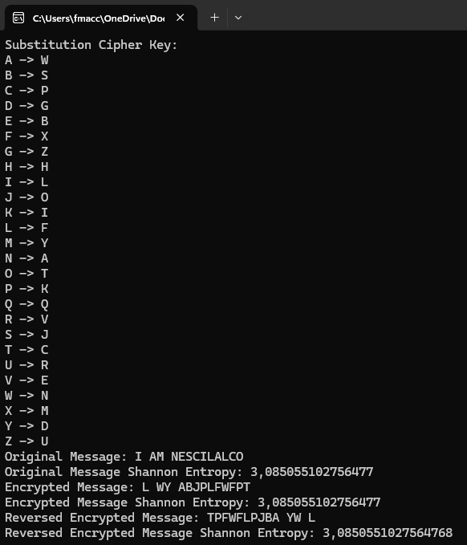

Simulation Exercise
Part 1
Taking the basis of homework 7, the means and variances of the empirical variances were calculated for the 1000 samples of 20, 30 and 100 throws of the same rigged die. Two lines graphs are generated showing these values and their behaviour, letting us see how the distributions change increasing the sample size. The frequency distribution of empirical variance were also generated for the 3 sizes of 20, 30 and 100 throws of the rigged die.
Let's see the code and the generated plots:

The "Simulate" button triggers the same function of Hwk7, where what has changed is shown
in the code: we
generate 1000 samples of sizes 20, 30 and 100 and for each of these we computed the empirical corrected
variance and we add it to the empiricalVariances list. Then we compute the means and variances
of the increasing list of empirical variances and we plot in the two convergence graphs shown below.

How the variance distribution changes with size
Mean of the empirical variances: as the sample size increases, the mean of the empirical
variance moves closer to the theoretical variance (red line in the variance' mean convergence graph).
Indeed,
the yellow line shown for the 100 size samples is almost overlapping the theoretical variance red line.
Variance of the empirical variances: For a rigged die, the variance of the empirical
variance will depend on the sample size. The bigger the sample, the smaller the variance of the empirical
variances will be.
With small samples, the variance of samples can be very spread out, so it may vary a lot from one sample to
another.
With large samples (eg 100 wrt 20 or 30), the distribution of variances will stabilise, and the distribution
of the samples will be more concentrated around the theoretical value of the variance.
In summary, as the sample size increases, the distribution of sample variances becomes more concentrated around the theoretical variance. This can be observed in the three graphs below, where the third graph, for \( n = 100 \), shows a narrower and taller bell shape, in correspondence with the theoretical value of the variance.
Part 2
The "Optional Simulation" button triggers the BtnSimulate_optional_Click
method, which calls the SubstitutionCipher method.
The method starts by analyzing the plain message "I AM NESCILALCO". The
AnalyzeFrequency
function calculates the
frequency distribution of its characters, showing how often each character appears. The most
frequent letters here are "I", "A", and "L", since "I" appears twice, "A" appears twice, etc..
This distribution is then used to compute Shannon entropy through the
CalculateShannonEntropy
function.
Next, the method applies a substitution cipher to encrypt the message. The cipher uses a substitutionKey to
map each character to another (unique), obscuring the original content.
Once encrypted, the frequency distribution of the message is analyzed again.
Finally, the method reverses the encrypted message and analyses it again.

Impact of Substitution Cipher on the Distribution
In the original message, the way letters are distributed shows the typical patterns of the language used. This natural distribution gives clues about the language and structure of the message before any encryption is applied.
When the message is encrypted using a substitution cipher, each letter in the original message is replaced with a different letter based on a random key. This means the original letters are swapped for new ones, following a specific mapping decided by the key. For instance, if "E" was the most frequent letter in the original message, after substitution, it might be mapped to a completely different letter ("B", for example). Similarly, "B" in the original message could become "S", and so on.
The result is that the familiar frequency patterns of the language disappear. Instead, the frequency of the letters is "randomized", making it harder for an hypothetical attacker to guess the original message just by analyzing the frequencies of the letters.
We can see in the graph that in the case of a monoalphabetic substitution cipher, frequency distribution and
entropy do not change compared to the original text. Each letter of the original message is replaced by a
single
letter, but the relative frequency of each letter does not change.
Therefore, the frequency distribution of each letter in the encrypted message will be identical to that of
the original message, simply with an alteration of the letters (for example, the letter "A" could become
"X", but the frequency of "A" in the encrypted message will be the same as that of "X" in the original
message).
Entropy
The entropy of a message measures the amount of uncertainty or "randomness" in the probabilities of occurrence of symbols in the message. In the case of a monoalphabetic substitution cipher, the entropy of the ciphered message will be the same as that of the original message, because the probabilities of occurrence of the letters do not change.
If, on the other hand, I used a polyalphabetic substitution cipher (such as the Vigenère cipher) or a block cipher (such as AES), the effect would be different. The frequency distribution would be altered, as in these ciphers the letters are replaced in a more complex way, taking more variables into account. Entropy would increase, because in a more complex cipher each letter would be less predictable and the frequency distribution would be more uniform.
Reverse
Reversing the encrypted message does not change the letter frequencies or entropy in terms of distribution, as discussed previously. The frequencies and entropy will remain the same, but the order of the letters will be different.
Reversing the message does not introduce additional randomness, though it might obscure the structure and patterns related to the position of the letters in the message.